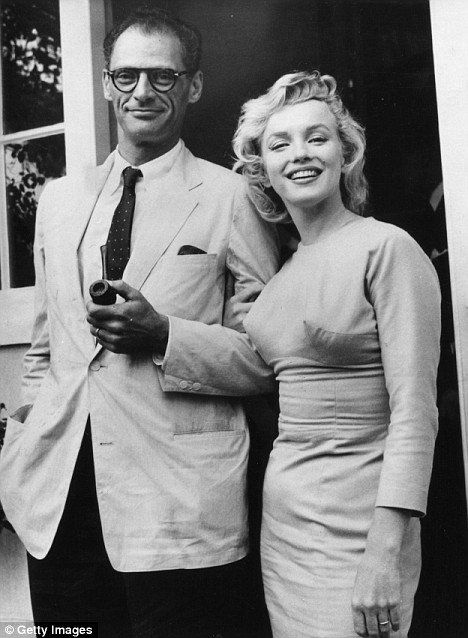

Jan 1961 Marilyn Monroe and Arthur Miller Get Divorced The Hollywood screen star Marilyn Monroe divorced her husband, playwright Arthur Miller, after less than five years of marriage. The divorce was granted in Mexico, where a judge signed the decree. The grounds of divorce were listed as "incompatibility". It was rumored that the pair had frequent quarrels over their differing lifestyles. Mr Miller had been working with his wife on her most recent film, The Misfits, based on a short story he wrote, although the pair were reported to be barely speaking on set. Her divorce from Arthur Miller was finalized in January 1961, with Monroe citing "incompatibility of character”.
